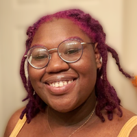
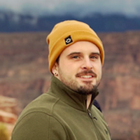
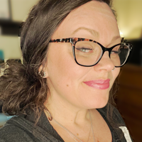

Hello, my name is Ariania Palmer! I have an educational background in humane studies as a global cultural studies major in college. I have professional experience in community outreach, where I worked in the nonprofit sector for a few years doing fundraising work, mentorship, and social activism. I now currently work in business on the backend side of business operations. I have a keen interest in working with and interpreting big data to help find answers to big problems. I've come to code fellows to learn skills that I can use as a tool in my life’s work as a social activist, and be able to share what I've learned with others that are also hoping to learn new things, to make changes in their communities. Since coming to code fellows, my slogan has become “making the world a better place through tech.

Drew is software developer with a background in business, team leadership, and human sciences. Most of Drew’s previous work experience stems from his time as a wellness coach where he learned many valuable skills and disciplines. Drew is passionate about web development, bringing people together, and finding creative solutions.

Genevieve DuPuy (she/her) is a full stack software developer. She has been working as a self employed esthetician specializing in sugar hair removal. While she absolutely adores her clientele and the customer service aspect of what she does, she's been hungry for a career would allow financial stability as well as stretch her creative side. Enter Code Fellows! Genevieve is excited to add her unique voice to the world of tech and looking forward to what the future holds in store!
Justin Benjamin is a full stack software development student with a professional background in live video infrastructure and technical program management. He is passionate about exploring new technology, being curious, music, building efficient solutions and streaming video. Outside of work and class, he spends time on various DIY projects with 3D printers and electronics. If not at home with the cats, you might catch him playing or listening to live music at a venue or visiting a local craft brewery.
PAIR PANIC Origin Story
In the mystical realm of Code Fellows, four students embarked on an extraordinary coding journey. Thundercat, a tech-savvy feline with a penchant for lounging atop keyboards, sensed an impending chaos lurking in the codebase.
As Ari, Genevieve, Justin, and Drew attended their Coding Class, they discovered Thundercat's peculiar powers. Together, they formed the superhero team "Pair Panic."
Their mission? To battle the mischievous villain Titus, a coder with a knack for causing havoc in digital realms. With their quirky pets by their side they tackled bugs and glitches with hilarious determination.
In a showdown for the ages, Titus unleashed a horde of rogue code, but Pair Panic countered with a secret weapon—cat memes! Titus, unable to resist the allure, fell into a fit of laughter, allowing Pair Panic to defeat him with a stroke of coding genius.
And so, Pair Panic became the guardians of Code Fellows, wielding keyboards and humor to defend against digital disasters. With their fearless antics and unwavering camaraderie, they proved that coding superheroes can save the day, one pun at a time.